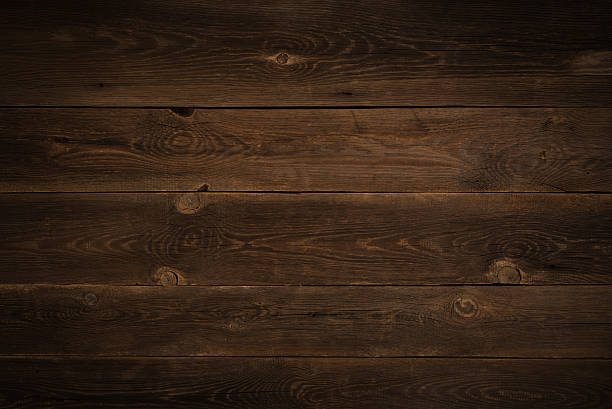

Home
keyboard_arrow_down
História
Centro-Oeste
Notícias
keyboard_arrow_down
Clima e Cotação
Notícias Autorais
Tempo Real
Costumes
keyboard_arrow_down
Gírias Tradicionais
Festas Tradicionais
Cultura
keyboard_arrow_down
Danças Típicas
Música
Literatura
Folclore e Lendas
Turismo
keyboard_arrow_down
Roteiros
Hospedagem
Rádio

Panorama
Centro-Oeste
Artista:
Todos
Ano:
Todos
search
headphones
Selecione uma música
--
--
skip_previous
play_arrow
skip_next
0:00
0:00
volume_up